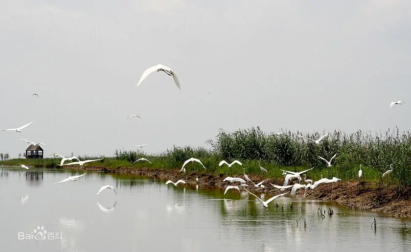

正确答案是B哦，你答对了吗
生物多样性：通常包括基因（遗传）多样性、物种多样性和生态系统多样性三个组成部分。
小故事：生物多样性（英文为biodiversity 或biological diversity）是一个描述自然界多样性程度的一个内容广泛的概念。对于生物多样性，不同的学者所下的定义是不同的。例如oNorse et al.(1986）认为，生物多样性体现在多个层次上。而Wilson等人认为，生物多样性就是生命形式的多样性（"The diversity of life"）（Wilson & Peter, 1988; Wilson, 1992）。孙儒泳（2001）认为，生物多样性一般是指“地球上生命的所有变异”。在《保护生物学》一书中，蒋志刚等（1997）给生物多样性所下的定义为：“生物多样性是生物及其环境形成的生态复合体以及与此相关的各种生态过程的综合，包括动物、植物、微生物和它们所拥有的基因以及它们与其生存环境形成的复杂的生态系统”。
环科类2107-2022.3.10-T9
powered by ZH☆
ps:这要是错了你高中生物老师绝对饶不了你~